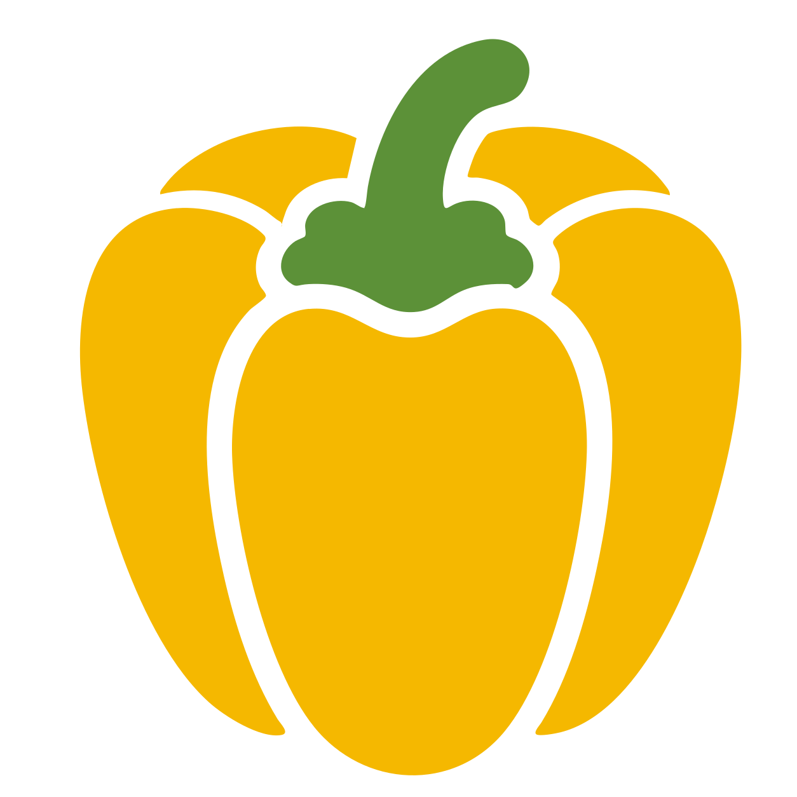
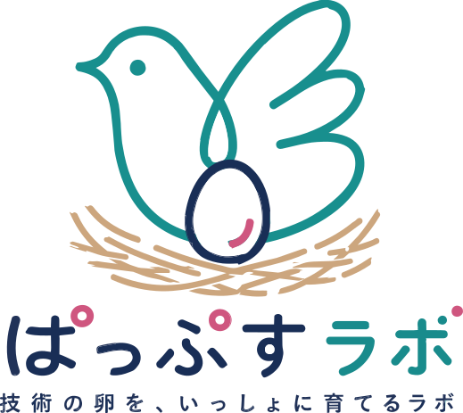
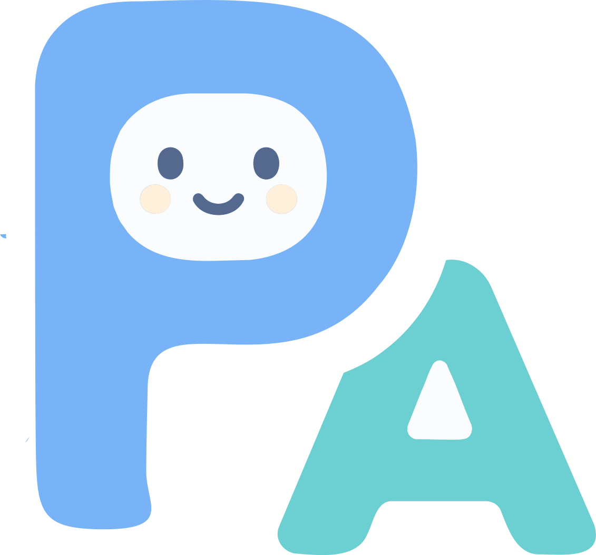

Paprikaパプリカ
分散ワーカー上の Chrome を Playwright スタイルの Python・PHP SDK で操作し、AI を併用して、 ページの画像・動画・リンクをまとめて収集するブラウザ自動化プラットフォーム。 削除請求の証拠保全と、ProtectionAI 基盤として開発されました。
- Python / PHP SDK（Playwright 互換のAPI）
- 分散ワーカー + 管理画面のライブパネル
- AI を組み合わせた収集ジョブ

ぱっぷすラボは、特定非営利活動法人 ぱっぷす (PAPS) の支援活動の中から生まれた、ツール・Web サービスを公開する場です。
デジタル性暴力の相談支援、削除請求、アウトリーチ、調査研究――。 ぱっぷすの活動現場には、市販のツールでは満たせないニーズがいくつもあります。 そこで自分たちで作ったツールのうち、他の団体・支援現場・教育・研究などでも役立ちそうなものを、誰でも使える形で公開しています。
相談・削除請求・アウトリーチの現場で、実際に必要だった機能だけを実装しています。
被害当事者の安全と尊厳を守るために、設計段階からプライバシーとセキュリティを考えています。
ソースコードや Web ツールを公開し、同じ課題に向き合う団体や個人と知見を共有しています。
いま、ぱっぷすラボから公開しているプロジェクトです。

分散ワーカー上の Chrome を Playwright スタイルの Python・PHP SDK で操作し、AI を併用して、 ページの画像・動画・リンクをまとめて収集するブラウザ自動化プラットフォーム。 削除請求の証拠保全と、ProtectionAI 基盤として開発されました。

ブラウザだけで、Windows 上の 1つのウィンドウだけを共有・遠隔操作できる Windows ツール。 相手は URL を開くだけ（アカウント・インストール不要）で操作を開始できます。 デスクトップ全体は構造的に映りません。
ドメイン名や IP アドレスを入力するだけで、DNS・WHOIS・IP Location・Ping・経路・ポート・SSL・サブドメインなどをまとめて確認できる、ブラウザだけで動くネットワーク総合診断ツール。 削除請求やセキュリティ調査の現場で実際に使われている機能を、誰でも試せる形で公開しています。
ぱっぷすラボは、ぱっぷす (PAPS) のプロジェクトとして運営されています。
PAPS is a non-profit organization whose mission is to “End to sexual exploitation.”
ぱっぷすは、ポルノ被害と性暴力被害（とくに性的な画像や動画の拡散、リベンジポルノ、セクストーション、AI 生成によるなりすまし画像など、デジタル性暴力）への 相談支援・削除請求・アウトリーチ・調査研究・政策提言を行う特定非営利活動法人です。
ぱっぷすラボの各プロジェクトは、実際の支援現場での課題から発想され、検証され、改善されてきました。 支援活動と並行して、技術的な知見もオープンに共有していくことを目指しています。
ぱっぷす公式サイト (paps.jp)ぱっぷすラボがツールを公開するときに大切にしている考え方です。
相談員・削除請求担当・アウトリーチワーカーなど、実際に使う人の困りごとから設計を始めます。
収集する情報・残るログ・通信経路を最小限にとどめ、被害当事者を二次被害にさらしません。
アカウントや有料サービスへの依存を避け、ブラウザや手元の PC で動くシンプルな構成を選びます。
依存ライブラリを絞り、ドキュメントを揃え、運用しながら一緒に育てていけるコードを心がけます。